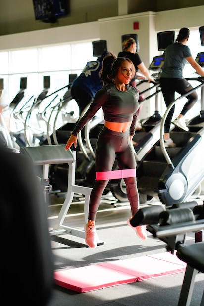

User Research | Interactive Prototyping | Adobe XD
Course User Experience Design and Evaluation
The lost feeling of motivation and inspiration when exercising.
Be-Goal: Inspiration. A sound application connected to a pulse band in realtime.

The design process consisted of 4 main steps.
A open-ended interview for 1 hour about the expected experince and thoughts about inspiration. What is inspiration for the user, how does she experience it today etc.
Design probes are embodied questions that exist in a co-creative, empathic and shared context between a participant and a design researcher. It enriches the design process through layers of meaning. The user was given 3 design probes that she where to finish and from that conslusions of her as a person could be drawn for future design choices.
A re-interview was done, this time dicussing the experince with the design probes. How the exercise felt and what conclusion the user herself drew from the exercise.
The first proposals were sketched on paper and then transferred to Invision Studio and made into a digital prototype. Going into the design process 3 main functions were choosen. The user should be able to:
An application that will help the user feeling motivated and inspired when exercising. The final prototype contained: